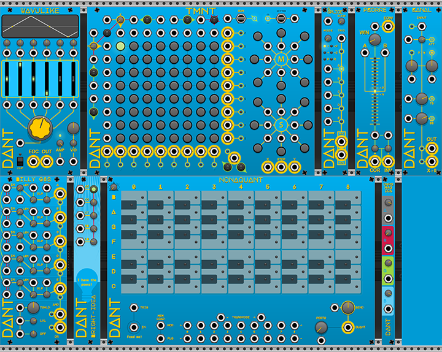

Artist, Musician, Computer geek & Software Engineer at Google.
Welcome to my website, don't get too excited, there really isn't much content, just links to my various endeavors.
Art
My main portals for art are Instagram & DeviantArt.
I also have a personal Instagram account where I mainly post landscape photography.

Music
I learnt classical guitar at school, so my first instrument is the axe really, but I am a Gen-X 80s kid so I have always loved synthesizers.
For some reason though, it took me until the start of Covid lockdown in 2020 to burden myself with an addiction to Eurorack modular.
My current setup & future plans for Eurorack can be divined by reading the tea leaves of my Modular Grid profile.
After getting into Eurorack modular synths, I discovered VCV Rack, a virtual modular synth application.
Next thing you know, I am developing my own virtual VCV Rack modules, DanTModules.
I have a BandCamp setup for synth related music that I want to release.
So far I have released a noise music/sample-able album of audio I created during 2020, it is under the CC BY-NC-SA 3.0 license.
I also semi-regularly post to my YouTube channel.
Finally, I have the dant.synth Instagram account.
Other Stuff
Nothing else to report currently.
If you would like to get in touch with me for questions, comments or suggestions, the best way is a DM on Instagram.